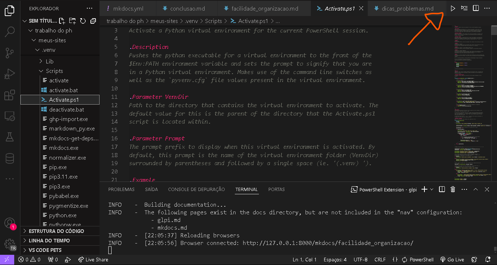

Facilidade e Organização com MkDocs
Por que usar o MkDocs?
MkDocs é uma ferramenta estática de geração de sites projetada para criar documentação de projetos de maneira simples e organizada. Ele é baseado em arquivos Markdown, o que facilita a edição e manutenção da documentação.
Vantagens do MkDocs
- Facilidade de Uso: Configuração e utilização intuitiva, especialmente quando usada em conjunto com o Visual Studio Code.
- Organização: Permite criar uma estrutura de documentação bem organizada, com navegação clara e personalizável.
- Temas e Plugins: Suporte a temas e plugins que adicionam funcionalidades e melhoram a aparência da documentação.
Requisitos
- VScode instalado na máquina
- Python instalado na máquina
- Conexão com internet
Instalação
1) Crie uma pasta meus-sites
2) Abra o terminal no VScode
3) Verifique se o python está instalado na maquina usando o comando
python --version
4)Crie um ambiente virtual
python -m venv .venv
Inicie o .venv (Obs: temos duas opções)
1- Aperte o botão de run localizado no canto superior direito da tela do vscode no arquivo localizado no sequinte diretorio (..\meus-sites.venv\Scripts\Activate.ps1).
2- Digite o seguinte comando no terminal & C:\Users\famil\OneDrive\Documentos\trabalho do ph\meus-sites\.venv\Scripts\Activate.ps1 alterando o diretorio de acordo com sua maquina ou onde estiver localizado no mesmo.
Instale o MkDocs usando pip:
pip install mkdocs mkdocs-material
Crie um projeto mkdocs new glpi
Agora pronto é só configurar sua documentação usando o mkdocs